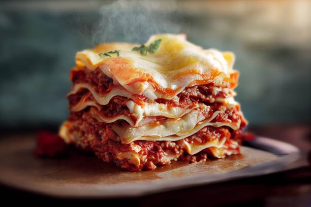

Lasagna

Description
La lasaña es un plato italiano tradicional que consiste en capas de pasta alternadas con salsa de tomate, carne, y queso, a menudo cubierto con una bechamel cremosa.
Se hornea hasta que esté dorada y burbujeante, ofreciendo una comida sustanciosa y reconfortante.
Ingredients
- Placas de lasaña
- Carne picada (ternera o cerdo)
- Salsa de tomate
- Cebolla
- Ajo
- Zanahoria
- Apio
- Aceite de oliva
- Sal
- Pimienta
- Albahaca
- Orégano
- Queso parmesano rallado
- Queso mozzarella
- Harina
- Mantequilla
- Leche
- Nuez moscada
Steps
- Cocina las placas de lasaña según las instrucciones del paquete.
- Sofríe la cebolla, el ajo, la zanahoria y el apio picados en aceite de oliva hasta que estén tiernos.
- Agrega la carne picada y cocina hasta que esté dorada.
- Incorpora la salsa de tomate, la albahaca, el orégano, la sal y la pimienta. Cocina a fuego lento durante 20-30 minutos.
- En otra sartén, derrite la mantequilla y añade la harina para hacer un roux.
- Agrega la leche poco a poco, batiendo constantemente, hasta obtener una salsa bechamel suave.
- Sazona la bechamel con sal, pimienta y nuez moscada.
- En una fuente para horno, coloca una capa de placas de lasaña.
- Añade una capa de la mezcla de carne y salsa de tomate, seguida de una capa de bechamel.
- Espolvorea con queso parmesano y mozzarella rallados.
- Repite las capas hasta que se utilicen todos los ingredientes, terminando con una capa de bechamel y queso.
- Hornea a 180°C (350°F) durante 30-40 minutos o hasta que esté dorada y burbujeante.
- Deja reposar durante unos minutos antes de cortar y servir.